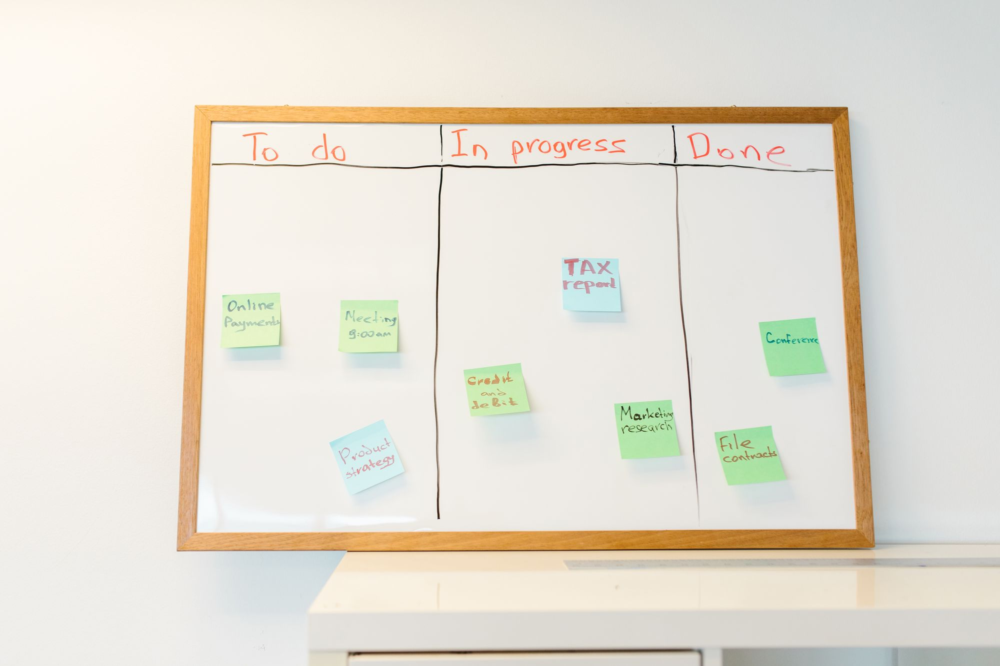

Geschäftsprozessmanagement › das gelebt wird.
Soll-Modelle, die nie umgesetzt werden, und Kennzahlen, auf die niemand reagiert: Geschäftsprozessmanagement entscheidet sich bei der Umsetzung im Betrieb, weit über das Zeichnen von Ablaufdiagrammen hinaus. Wir steuern Ihre Abläufe durchgängig — von der faktenbasierten Ist-Aufnahme über ein realistisches Soll-Modell bis zur Umsetzung, die im Betrieb tatsächlich gelebt wird.
Drei Gründe, warum Prozessmanagement folgenlos bleibt.
Am Werkzeug oder am guten Willen liegt es selten. Diese drei Muster machen aus Prozessmanagement ein Papierprojekt.
Die Ist-Aufnahme bleibt subjektiv
Im Workshop erzählt jeder, wie der Ablauf seiner Wahrnehmung nach läuft — und am Ende steht ein Bild, dem niemand ganz traut. Beruht die Ist-Aufnahme auf Wahrnehmungen, baut das ganze Soll-Modell auf Sand, und der größte Hebel im Prozess bleibt unentdeckt; erst Fakten geben ihm festen Grund.
Soll-Modelle werden präsentiert, nie umgesetzt
Ein schönes Soll-Modell entsteht, wird vorgestellt, alle nicken — und im Tagesgeschäft bleibt alles beim Alten. Solange die Umsetzung erst am Ende mitgedacht wird, bleibt jede Prozessdokumentation ein Foliensatz, neben dem die alten Abläufe unverändert weiterlaufen.
Die dokumentierten Prozesse werden umgangen
Es gibt eine Prozessdokumentation, doch gearbeitet wird nach Gewohnheit und über manuelle Workarounds. Wird der dokumentierte Prozess umgangen, liegt das fast immer am Ablauf selbst: Der dokumentierte Weg ist umständlicher als der gewachsene, oder zu viele Freigabe-Schritte bremsen ihn aus.

Was unser Geschäftsprozessmanagement umfasst.
Vier Bausteine, die den ganzen Bogen schließen — von den Fakten bis zum gelebten Ablauf.
Faktenbasierte Ist-Aufnahme
Über die Workshop-Wahrnehmung hinaus ermitteln wir, wie ein Ablauf wirklich läuft: über Daten aus den Systemen, beobachtete Durchlaufzeiten und die manuellen Workarounds, die sich danebengelegt haben. So wird sichtbar, wo der größte Hebel tatsächlich liegt — auch dort, wo ihn vorher niemand vermutet.
Soll-Modell mit eingebauter Umsetzung
Wir entwerfen ein Soll-Modell, das sauber aussieht und zugleich umsetzbar ist: mit weniger Freigabe-Schritten, klaren Verantwortlichkeiten und einer realistischen Standardisierung. Die Frage „Wie kommt das in den Betrieb?“ steht von Anfang an im Mittelpunkt.
Kennzahlen, die zu Handlung führen
Wir definieren wenige, belastbare Kennzahlen — etwa Durchlaufzeit oder Fehlerquote — und legen fest, wer bei welchem Wert was tut. So werden Kennzahlen gemessen und lösen unmittelbar Handlung aus, über das reine Reporting hinaus.
Verankerung im gelebten Betrieb
Ein optimierter Prozess gilt erst dann als fertig, wenn er gelebt wird. Wir begleiten die Umstellung, lösen die alten Workarounds tatsächlich ab und übergeben an benannte Prozessverantwortliche — damit der Ablauf auch nach dem Mandat verlässlich läuft.
- Ist-Aufnahme auf Fakten und Daten, gegründet auf belegbaren Messungen
- Soll-Modelle, deren Umsetzung von Beginn an mitgedacht ist
- Wenige Kennzahlen mit hinterlegter Handlung, jede mit klarer Konsequenz
- Weniger Freigabe-Schritte und abgelöste Workarounds, über zusätzliche Dokumentation hinaus
In fünf Phasen vom Engpass zum gelebten Prozess.
Jede Phase endet mit einem Ergebnis, das Sie behalten — eigenständig nutzbar, auch als einzelner Schritt.
Engpass und Ziel klären
Wir beginnen mit der Frage, wo der größte Hebel liegt — zielgerichtet, vor der Modellierung aller Prozesse. Aus Daten und einem ersten Blick auf die Abläufe wählen wir den Prozess, dessen Optimierung am meisten bringt.
Faktenbasierte Ist-Aufnahme
Für den gewählten Prozess erheben wir den Ist-Zustand aus Systemdaten, Durchlaufzeiten und den tatsächlich gelebten Workarounds — über Interviews hinaus, breit abgesichert. Das Ergebnis ist ein Bild, dem alle Beteiligten trauen.
Soll-Modell und Kennzahlen
Wir entwerfen den optimierten Ablauf samt der Kennzahlen, an denen sich sein Erfolg messen lässt. Schon hier klären wir, wie die Umstellung erfolgt und wer den Prozess später verantwortet.
Umsetzung und Ablösung der Workarounds
Der optimierte Prozess wird eingeführt, die alten Workarounds werden abgeschaltet, überflüssige Freigabe-Schritte fallen weg. Die Beteiligten arbeiten den neuen Ablauf ein, durchgehend von uns begleitet.
Verankerung und kontinuierliche Verbesserung
Wir verankern die Verantwortung im Haus und richten einen schlanken Kreislauf ein, in dem die Kennzahlen regelmäßig zu Verbesserungen führen. So bleibt das Prozessmanagement dauerhaft lebendig, über das Projektende hinaus.
Wo Geschäftsprozessmanagement am meisten bewegt.
Vier Felder, in denen sich die Wirkung im Tagesgeschäft schnell zeigt.
Vom Eingang bis zur Rechnung
Der Weg von der Bestellung bis zur Rechnung kreuzt oft mehrere Abteilungen und Systeme. Wir entwirren ihn, entfernen überflüssige Freigabe-Schritte und senken die Durchlaufzeit — bei voller Kontrolle über jeden Schritt.
Anfragen zügig bearbeiten, jeden Sachstand nur einmal recherchieren
Wo Anfragen und Vorgänge bearbeitet werden, entstehen Liegezeiten zwischen den Stationen. Ein klarer Ablauf mit eindeutigen Übergaben sorgt dafür, dass jeder Vorgang zügig weiterläuft und jeder Sachstand nur einmal recherchiert wird.
Routinen verschlanken
Stammdaten, Freigaben, wiederkehrende Meldungen: In der Verwaltung sammeln sich Schritte an, die niemand mehr hinterfragt. Wir prüfen jeden auf seinen Beitrag und standardisieren, was Standard sein kann.
Übergaben zwischen Abteilungen, die lückenlos greifen
Die teuersten Engpässe liegen oft an den Übergaben zwischen Abteilungen. Klare Verantwortung und eindeutige Übergabepunkte sorgen dafür, dass jeder Vorgang an der Schnittstelle eine zuständige Person und einen nächsten Schritt hat.
Die etablierten Methoden — fundiert erklärt.
Gutes Prozessmanagement bedient sich bewährter Methoden. Wir erklären, wofür jede taugt, und wählen passend zum Ziel — sie sind für uns Werkzeuge im Dienst des Ergebnisses.
Lean
Lean richtet den Blick auf Verschwendung: Wartezeiten, Doppelarbeit, unnötige Wege. Die Methode hilft, einen Ablauf auf das zu reduzieren, was tatsächlich Wert schafft — besonders dort, wo viele kleine Schritte sich summieren.
Six Sigma
Six Sigma reduziert Streuung und Fehler über datenbasierte Analyse. Die Methode lohnt sich, wo Qualität schwankt und die Ursachen unklar sind — sie macht aus Bauchgefühl eine belegte Aussage über die Fehlerquelle.
BPMN
BPMN ist eine standardisierte Notation, um Abläufe eindeutig zu modellieren. Sie sorgt dafür, dass alle Beteiligten dasselbe Diagramm gleich lesen — die Voraussetzung dafür, dass aus einem Soll-Modell ein umsetzbarer Prozess wird.
Kaizen
Kaizen steht für kontinuierliche Verbesserung in kleinen Schritten, getragen von den Mitarbeitenden selbst. Die Methode verankert Prozessmanagement dauerhaft im Alltag und führt es über einmalige Projekte hinaus.
DMAIC
DMAIC ist der strukturierte Verbesserungszyklus aus Define, Measure, Analyze, Improve und Control. Er hält ein Optimierungsvorhaben auf Kurs — von der klaren Zielsetzung bis zur dauerhaften Kontrolle des Ergebnisses.
Wir richten das Vorgehen an Ihrer Organisation, Ihren Abläufen und Ihrer Systemlandschaft aus.
Vier Grundsätze prägen jedes Geschäftsprozessmanagement-Mandat bei uns.
- Wir beginnen am Engpass mit dem größten Hebel, gezielt vor der Modellierung sämtlicher Abläufe
- Methoden folgen dem Ziel: Lean, Six Sigma, BPMN oder Kaizen kommen zum Einsatz, wo sie greifen — bedarfsgerecht ausgewählt
- Soll-Modelle enthalten ihre Umsetzung; als Ergebnis gilt uns ein Modell erst mit klarem Weg in den Betrieb
- Wir hinterlassen wenige, gepflegte Kennzahlen mit hinterlegter Handlung — ein Dashboard, das tatsächlich genutzt wird
Woran Sie ein wirksames Prozessmanagement erkennen.
Drei Zusagen, an denen Sie uns im Projektverlauf festhalten können.
Wir messen, bevor wir modellieren
Am Anfang stehen Fakten, gewonnen aus Daten und Beobachtung. Erst wenn klar ist, wie ein Ablauf wirklich läuft und wo der Hebel liegt, lohnt das Soll-Modell — alles davor bliebe gut gemeintes Raten.
Wir bauen die Umsetzung mit ein
Als Erfolg gilt uns ein Soll-Modell erst, wenn es in den Betrieb kommt. Deshalb steht die Frage nach Umstellung, Verantwortung und Ablösung der Workarounds von Beginn an im Plan.
Wir hinterlassen einen lebendigen Prozess
Das Ziel ist ein Ablauf, der gelebt und eigenständig verbessert wird — getragen von benannten Verantwortlichen im Haus, die ihn aus eigener Kraft weiterführen.
So sichern wir Faktenbasis, Wirkung und Beteiligung.
Wirksames Prozessmanagement berührt Daten, Verantwortung und die Menschen, die den Ablauf tragen. Dafür gelten klare Leitplanken.
Fakten vor Wahrnehmung
Jede Aussage über einen Ablauf wird, wo möglich, mit Daten belegt: Durchlaufzeiten, Mengen, Fehlerquoten. So entsteht eine Ist-Aufnahme, der alle trauen — und ein Soll-Modell, das auf Belegen steht, unabhängig von der lautesten Stimme im Workshop.
Die Beteiligten gestalten mit
Niemand hält sich an einen Prozess, der über seinen Kopf hinweg verordnet wurde. Wir beziehen die Menschen ein, die den Ablauf täglich gehen — sie kennen die Workarounds und die Gründe dafür, und nur mit ihnen wird der neue Weg gelebt.
Häufige Fragen zum Geschäftsprozessmanagement.
Was Geschäftsführung und Prozessverantwortliche zum Geschäftsprozessmanagement am häufigsten fragen — offen beantwortet.
Wo sollen wir mit dem Prozessmanagement anfangen?
Warum scheitern Prozessoptimierungs-Projekte so oft?
Wie finden und analysieren wir die Engpässe in unseren Abläufen?
Warum ist Prozess-Mapping so frustrierend — und wie machen Sie es anders?
Warum hält sich niemand an die dokumentierten Prozesse?
Welche manuellen Workarounds kosten uns am meisten Zeit?
Lohnt sich eine externe Prozessberatung überhaupt?
Wie standardisieren wir Abläufe und bleiben dabei flexibel?
Welche Methoden lohnen sich in der Prozessoptimierung wirklich?
Wie lange dauert ein Geschäftsprozessmanagement-Projekt?
Was kostet eine Geschäftsprozessmanagement-Beratung?
Was ist der Unterschied zwischen Prozessoptimierung und Geschäftsprozessmanagement?
Sprechen wir über Ihren größten Engpass.
Der erste Schritt ist ein Erstgespräch von 30–45 Minuten. Wir klären Ihre Ausgangslage, die wichtigsten Engpässe und ob CX der richtige Partner ist. Wenn nicht, verweisen wir auf jemanden, der besser passt.
Erstgespräch anfragen →Diese Fragen klären wir, bevor BPM zur Dokumentation ohne Wirkung wird.
Geschäftsprozessmanagement muss Abläufe steuerbar machen, nicht nur Prozessbilder erzeugen. Wir prüfen, welche Prozesse wirklich geführt, gemessen und verbessert werden sollen.
Welche Prozesse sind geschäftskritisch?
Wir priorisieren Abläufe mit Einfluss auf Kunden, Kosten, Qualität oder Risiko statt die gesamte Organisation auf einmal zu modellieren.
Wer ist für den Prozess verantwortlich?
Wir klären Rollen, Entscheidungsrechte und Pflege, damit Prozessmanagement nicht bei einer Stabsstelle hängen bleibt.
Welche Kennzahlen führen den Prozess?
Wir definieren wenige Messpunkte, die Verbesserungen auslösen und nicht nur Berichte füllen.
Wie bleibt BPM lebendig?
Wir richten Routinen ein, in denen Prozesse überprüft, angepasst und im Alltag verbessert werden.
Zwei Gründer. Ein klarer Fokus.
Johannes Reusch und Hans-Helmut "Hannes" Scheel führen CEx gemeinsam. Beide begleiten Mandate persönlich — mit Beratungserfahrung, Umsetzungsverantwortung und einem klaren Blick für den entscheidenden Fokus.


- Erfahrene Berater — jedes Mandat persönlich geführt
- Branchenübergreifend · vom Mittelstand bis zum Konzern
- Strukturiertes Vorgehen · nachvollziehbar und dokumentiert
- DACH-weit tätig